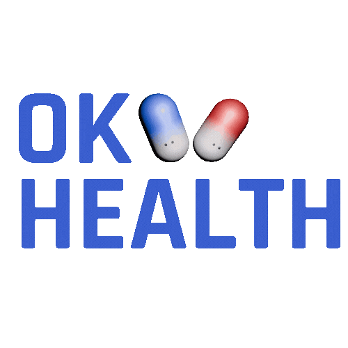
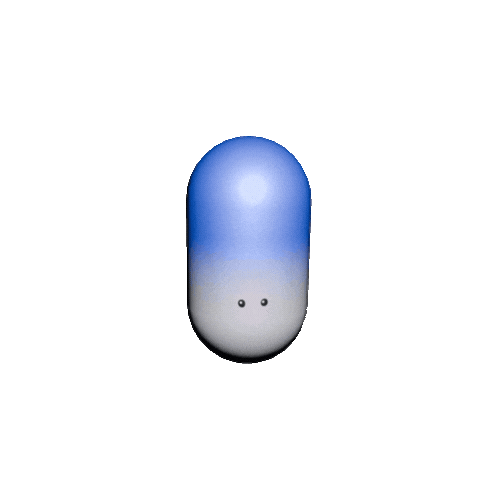

OKHealth

The brand was designed to soften the typically rigid nature of medical scheduling systems through a friendly, approachable tone. To support this, I created a mascot-style logo using two pills, introducing warmth and personality. This is intentionally contrasted with the clean, modern sans-serif typeface Rajdhani, maintaining clarity and professionalism.


The mascot is not a central interactive element of the website, so it did not require high versatility. Instead, it was designed to align closely with the app’s overall visual style and color palette, reinforcing consistency across the product.